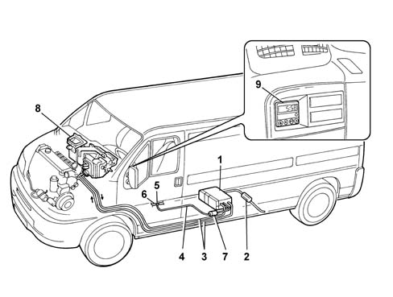
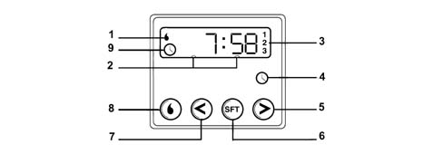
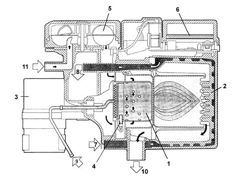
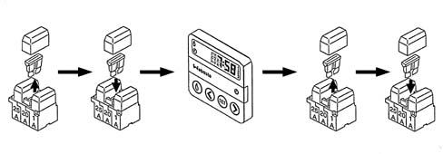

APPLICATION
- Path
- Descriptions > 50 AUXILIARY UNITS > 5040 AIR CONDITIONING CASING AND COMPONENTS > APPLICATION
- Kind
- system description
- Applies to
- all engines; all production periods
- Interactive page
- https://sloeber94.github.io/elrnDB-fDct/en/#/244000430
Applies to: all engines; all production periods
SPECIFICATIONS
The additional heater is optional on all versions of this vehicle.
The vehicle may optionally be fitted with two different independent heater versions: one fully automatic, the other programmable.
Programmable version
The Webasto Thermo Top C suppelementary heater is fully independent of engine operation and allows:
- pre-heating of engine coolant
- reduction of the time the engine takes to warm up
- passenger compartment heating with the engine off
- elimination of ice and condensation from windows
The advantages of having an additional heater are:
- less engine wear
- a reduction in harmful emissions
- improved comfort
- increased safety
Automatic version
The automatic version, without digital timer, works completely independently of the engine.
Unlike the programmable version, this version operates automatically whenever the key is turned on, according to the temperature recorded.
OPERATING DESCRIPTION FOR PROGRAMMABLE VERSION
System description
The system consists of:
- A heating unit that essentially consists of a diesel burner (1);
- Integral outdoor air temperature sensor and integral electric pump for engine coolant circulation.
- Exhaust gas pipe with silencer (2).
- Electric fuel metering pump (7).
- Fuel delivery pipe (5).
- A heat exchanger, coaxial to the burner, connected via pipes (3) to the vehicle coolant system;
- An output pipe (4) from the metering pump to the burner;
- Passenger compartment heating/ventilation unit (8) may be started automatically via the heater unit control unit;
- An electronic control unit for controlling and regulating auxiliary heater system functions built into the heater unit;
- A digital timer (9) for programming the heater activation time or for immediate manual activation.

- 1 - Independent heater unit.
- 2 - Exhaust silencer.
- 3 - Coolant pipes
- 4 - Fuel delivery pipe.
- 5 - Three-way connector
- 6 - Diesel return pipe from injection pump to reservoir.
- 7 - Heater fuel metering pump.
- 8 - Heating/ventilation unit.
- 9 - Digital timer.
The system interfaces with the vehicle by means of the engine cooling, fuel supply and electrical systems.
- Interface with the engine cooling system: the coolant leaving the power unit is directed to the heater and is returned to the circuit by a dedicated electric pump.
- Interface with the fuel supply system: The heater burner is supplied with fuel, taken directly from the tank by means of an electric pump and conveyed in a special pipe.
- Interface with the electrical system: the heater is fitted with dedicated connectors which ensure the supply for the two electric pumps (fuel and coolant), the burner heater plug and the management control unit.
Digital timer operation
The heater may operate automatically, if programmed using the digital timer, or manually by pressing the "immediate heating" key on the timer.
For the system to operate, the passenger compartment heating/ventilation unit air temperature adjustment knob must be in "warm air" position, while the passenger compartment heating/ventilation unit fan speed adjustment knob must be set to "2".

- 1 - Heater cycle warning light.
- 2 - Display lighting.
- 3 - Clock preselection recall number.
- 4 - Clock button.
- 5 - Hour forward adjustment button.
- 6 - Program selection button.
- 7 - Hour back adjustment button.
- 8 - Immediate heating activation button.
- 9 - Time adjustment/reading warning light
Programming heater activation times
Once the heater device activation time and duration have been set, the time must be adjusted:
- press button (4);
- warning light (9) appears on the display and the display lights up
- to set the time, press buttons (5) and (7) within 10 seconds to select the exact time;
Current time reading.
Press button (4) to display current time for 10 seconds and clock operating mode warning light (9). Press button (8) to turn on display and warning light (1).
Supplementary heater deactivation
When button (8) is pressed again, device deactivation is indicated by the display lighting and warning light (1) going off.
Selecting activation time.
Press key (6) on the display, which lights up. The following appear for 10 seconds: The number (3) corresponding to the selected setting (three possibilities only one of which is active when selected by pressing button (6) within 10 seconds), symbols (10) or a pre-set time.
Press buttons (5) or (7) within 10 seconds until the required activation time appears on the display. The new setting is confirmed by the disappearance of the activation time, the presence of a programming number (3) and illumination of the display.
Deletion of preselected
Press key (6) briefly. The display lighting goes off and number (3) indicating the preselected time disappears.
Calling up programmed activation times
Press key (6) several times until the number (3) corresponding to the programmed activation time appears on the display. At this point it is possible, as described previously, to alter the activation time or (after waiting for 10 seconds when the activation time disappears from the display) delete the preset time.
DESCRIPTION OF THE COMPONENTS
Description of the heater unit
The heater is the central unit of the system. It ensures the heating of the engine fluid and the management of the system operating parameters.
The heater includes the various components which are vital for the operation of the system.
The central part of the unit consists of a diesel burner (1) that contains the flame and a coaxial heat exchanger (2) that heats the water circulating round the system.
The following are also present:
- an electric coolant circulation pump (3) that allows coolant to circulate through the system with the engine off.
- A glow plug (4) to ignite combustion,
- A combustion air fan (5) that draws air in from an external pipe to supply the air required for combustion.
The heater unit is complemented by an electronic control unit (6), a probe that measures fluid temperature and sends a proportional signal to the control unit, a photcell that detects the presence of a flame and sends a message to the electronic control unit and a thermal switch that sends the control unit a signal to cut off the fuel supply if the heater body becomes too hot.
A fuel metering pump external to the heater unit and controlled by the electronic control unit takes up the amount of fuel required by the burner under different operating conditions from the vehicle fuel supply system.

- 1 - Burner
- 2 - Heat exchanger
- 3 - Coolant circulation pump
- 4 - Glow plug
- 5 - Combustion air fan
- 6 - Electronic control unit
- 7 - Combustion air intake
- 8 - Coolant intake
- 9 - Diesel intake
- 10 - Coolant outlet
- 11 - Exhaust gas outlet
SYSTEM OPERATING LOGIC
Operation of programmable device
The Webasto heater system operates whether the engine is on or off. It operates fully automatically to heat, maintain the temperature in and drive fluid through the system for a preset time period to ensure temperature conditions in the passenger compartment and engine are optimum upon start-up.
The device may start to operate automatically on the basis of a program set on a digital timer or manually by pressing the "immediate heating" button on the timer.
In both cases, the electronic control unit operates the coolant circulation pump, glow plug and combustion air intake fan upon activation.
Once the glow plug preheating period of 30 seconds has elapsed, the fuel metering pump is operated and combustion is triggered at ignition power.
The presence of a flame, detected by the photocell, causes:
- glow plug deactivation and, to stabilise combustion,
- a 20 second reduction of fuel pump and combustion air fan power to a reduced mode
After heater activation, the electronic control unit operates the liquid circulation pump and ignites the burner in accordance with a preset, controlled procedures.
Circulation pump output is managed by an electronic control unit to minimise the initial heating time.
When the fluid reaches 30°C, the control unit operates the passenger compartment heater fan.
When the fluid reaches 72°C, the electronic control unit reduces burner power and cuts off operation at 76.5°C, leaving the timer operation indication, circulation pump and passenger compartment heater fan activated. If fluid temperature drops below a threshold of 71°C, the control unit automatically reactivates combustion.
If heater is equipped with a thermal limiter that cuts off combustion in the case of overheating due to insufficient coolant/coolant leaks. In this event, press the program selection button before turning the heater back on after repairing the system fault and/or topping up the coolant.
The heater may go off spontaneously due to lack of fuel after start-up or due to the flame going out during operation. In this case, carry out the deactivation procedure and try to turn the heater back on by carrying out the release procedure.
Releasing the heater after shut-down due to a fault
If the heater overheats or if it is deactivated three times due to a fault, carry out the heater release procedure after removing the source of the fault.
Turn the heater off and on as shown in the figure.

Cut off the power by removing the 20A fuse (yellow) on the heater wiring loom.
Refit the fuse and press the activation key on the digital timer.
Cut off the power again by removing the 20A fuse (yellow) on the heater wiring loom.
Re-insert the above fuse to turn the heater back on.